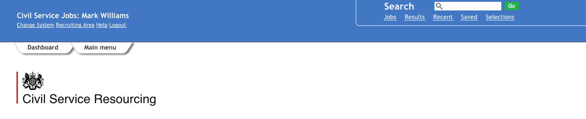

Applicant Tracking System improvements
Header/Primary navigation
The main issue with the header is navigation, there are to many options and not all are strictly necessary (atleast not as primary navigation). The styling also could be improved dramatically - colour contrast, spacing and images all need to be reviewed/improved.
Acceptance criteria
- Remove the tasks navigation option - you get the same options on dashboard
- Remove random semicolons and italic style on links below your name
- Remove space before colon
- Increase height and improve spacing (see image below)
- Remove old Civil Service Resourcing logo and apply new one below the top banner (only to appear on the dashboard))
- Remove magnifine glass icon
- Move the 'Search all' navigation option to the main menu (secondary navigation)
- Make font colour white
- Apply -webkit-font-smoothing: antialiased to all elements
- Apply a simple white border to #searchContainer
- Remove image from #global and apply background colour: #4576BF
- Remove the 'go' icon replace with new green icon - all icons to be provided to WCN as a sprite.
- Remove the left and right margin and border from #maincontentdiv
- Remove div at bottom of page (grey footer) as it doesn't appear to add anything
- Remove all arrows frmo the #searchOptions container
- Place the magnifine glass inside the search box - to replace the right arrow graphic
- Remove 'Status' link - statuses can be accessed via the widget
- Consider whether we need to remove any other links below the search box
- Add H1 Your dashboard (every page should have a H1) and add text below H1 'Create job adverts and manage applications'
- Conditional page elements:
- Only show 'Change system' if user has access to more than one system.
- Only display the Results, Recent, Saved and Selecion navigation options if user has role: Recruiter, System Administrator or Retained team - these links are otherwise confusing, non descriptive and add to the 'noise'.
- Only show 'Recruitment area' if user has access to more than one owner pool.
- If user is not an system administrator link help to new system guidance which is being created on GOV.UK.
Example
Typography
Hierarchy is unclear on many pages and there is a lack of consistency when it comes to headings, paragraphs, labels, spacing.
Headings
H1 - a 48px bold heading
H2 - a 36px bold heading
H3/H4 - a 24px bold heading
Heading with a subheading
DashboardCreate job adverts and manage applications
Iconography
Icons have performed badly in usability tests. Users don't understand the meaning behind the images and some of the options which are available simply are not understood or used by the average user.
By rationalising the icons and improving the quality of the graphics we believe that users will be able to find relevant content quickly without help. We'll also look to ask for additional input when certain icons are selected to speed up the process of accessing relevant content.